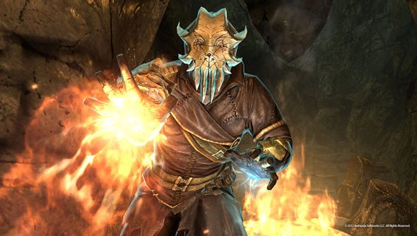

The Elder Scrolls V: Skyrim is an action role-playing video game developed by Bethesda Game Studios and published by Bethesda Softworks. Skyrim is set 201 years after the events of The Elder Scrolls IV: Oblivion although it is not a direct sequel. The game takes place in Skyrim, a province of the Empire on the continent of Tamriel, amid a civil war between two factions: the Stormcloaks, led by Ulfric Stormcloak, and the Imperial Legion, led by General Tullius . The player character is a Dragonborn, a mortal born with the soul and power of a dragon. Alduin, a large black dragon who returns to the land after being lost in time, serves as the games primary antagonist. Alduin is the first dragon created by Akatosh, one of the series gods, and is prophesied to destroy and consume the world.
Skyrim is playable from either a first or third-person perspective. The player may freely roam over the land of Skyrim which is an open world environment consisting of wilderness expanses, dungeons, caves, cities, towns, fortresses, and villages. Players may navigate the game world more quickly by riding horses, paying for a ride from a city's stable or by utilizing a fast-travel system which allows them to warp to previously discovered locations. The game's main quest can be completed or ignored at the player's preference after the first stage of the quest is finished. Non-player characters (NPCs) populate the world and can be interacted with in a number of ways: the player may engage them in conversation, marry an eligible NPC, kill them or engage in a nonlethal "brawl". As in previous The Elder Scrolls games, killing certain NPCs can make some quests or items unobtainable. The player may choose to join factions which are organized groups of NPCs — for example, the Dark Brotherhood, a band of assassins. Each of the factions has an associated quest path to progress through. Each city and town in the game world has jobs that the player can engage in, such as farming.
When exploring the game world the player may encounter wildlife. Many creatures in the wilderness are immediately hostile towards the player. However, game animals such as elk and deer will simply run away. Skyrim is the first entry in The Elder Scrolls to include dragons in the game's wilderness. Like other creatures, dragons are generated randomly in the world and will engage in combat with NPCs, creatures and the player. Some dragons may attack cities and towns when in their proximity. The player character can absorb the souls of dragons in order to use powerful spells called "dragon shouts" or "Thu'um". Each shout contains three words in the language spoken by dragons, and the strength of the shout will vary depending on how many words have been spoken. The words to shouts can be learned by visiting "word walls" in dungeons or around the wilderness. The words to each shout are unlocked for use by spending the absorbed souls of slain dragons. A regeneration period limits the player's use of shouts in gameplay.
Vampirism in Skyrim is a disease that transforms players infected with Sanguinare Vampiris into vampires: feared, blood-drinking creatures of the night. If the Dawnguard add-on is installed, and you have been granted vampirism from Serana or Lord Harkon, you will be able to transform into a powerful Vampire Lord with a lesser power.